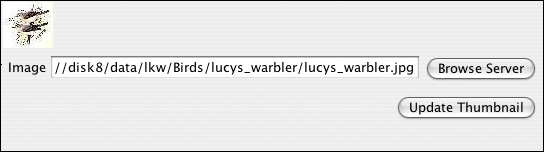
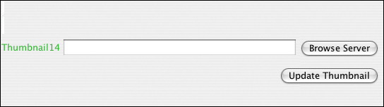
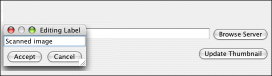
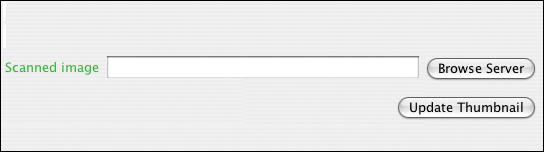

Image widget
The image widget lets you upload an image to your data form, and it stores the location
of the image file. The image widget will automatically display a thumbnail version of your
image. In Browse mode, the thumbnail and file location will be clickable links, so you
can click on the thumbnail to view the larger version.
Example:

In the Create Form tab, click on the image widget icon in the toolbar.

The image widget appears with a default label.

Double click on the default name to enter the name you wish to use.

The image widget is now ready to be used in Enter Data mode. By clicking the "Browse
Server" button, you will be able to locate the image file you wish to upload. If you
later edit or replace the original image file, clicking the "Update Thumbnail" button
will retrieve the new version.
